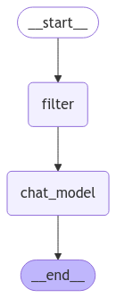

✂️ Tema 8: Trim y Filter Messages – Optimización del Historial de Mensajes
🚀 ¿Qué es el Trimming y Filtering de Mensajes?
A medida que un grafo interactúa con los usuarios, el historial de mensajes puede crecer considerablemente, lo que puede:
- Aumentar el costo de procesamiento para los modelos LLM.
- Reducir la eficiencia del grafo en conversaciones largas.
- Diluir el contexto, incluyendo mensajes irrelevantes.
Para solucionar esto, LangGraph ofrece herramientas que permiten gestionar y optimizar el historial de mensajes:
RemoveMessages– Elimina mensajes específicos.trim_messages– Recorta el historial manteniendo solo los mensajes más recientes.summarize_conversation– Resume la conversación para reducir la longitud del historial, manteniendo el contexto.
Nota Importante
Al eliminar mensajes del historial, es crucial asegurarse de que la estructura de los mensajes siga siendo válida para el modelo LLM.
Algunos modelos, como los chatbots basados en LLM, requieren que el primer mensaje sea de un Humano (HumanMessage).
👉 Antes de procesar el historial, verifica que la estructura cumpla con los requisitos del modelo para evitar errores en su funcionamiento.
🧠 ¿Por qué es Importante?
- Optimización del Rendimiento: Reduce la cantidad de datos enviados al LLM.
- Mejora de la Precisión: Mantiene el contexto relevante, eliminando información redundante.
- Ahorro de Costos: Menos tokens procesados significa menos consumo de recursos.
⚙️ ¿Cómo Funciona el Trimming y Filtering?
LangGraph ofrece diferentes enfoques según el escenario:
- Eliminar mensajes irrelevantes o antiguos.
- Recortar automáticamente después de alcanzar un límite.
- Resumir el historial para mantener el contexto clave.
📋 Ejemplo Práctico: Chatbot con Gestión del Historial de Mensajes
Vamos a crear un chatbot que interactúa con el usuario, pero gestiona el historial para mantener solo los mensajes relevantes y no saturar el flujo del grafo.
🛠️ Opción 1: Eliminar Mensajes Específicos con RemoveMessages
Permite eliminar ciertos mensajes del historial, ideal para eliminar mensajes duplicados o irrelevantes.
from langchain_core.messages import HumanMessage, AIMessage, RemoveMessage
from IPython.display import Image, display
from langgraph.graph import MessagesState
from langgraph.graph import StateGraph, START, END
# Nodes
def filter_messages(state: MessagesState):
# Eliminamos todo el historial menos los 2 mas recientes
delete_messages = [RemoveMessage(id=m.id) for m in state["messages"][:-2]]
return {"messages": delete_messages}
def chat_model_node(state: MessagesState):
# Simulamos una respuesta de un LLM.
return {"messages": [
AIMessage(
content="El producto B cuesta 150€ y está disponible en color rojo y azul. ¿Te interesa alguna de estas opciones?",
id="accce84f-3e31-4cf2-b16d-5aed5a4b890a"
)
]}
# Build graph
builder = StateGraph(MessagesState)
builder.add_node("filter", filter_messages)
builder.add_node("chat_model", chat_model_node)
builder.add_edge(START, "filter")
builder.add_edge("filter", "chat_model")
builder.add_edge("chat_model", END)
graph = builder.compile()
# View
display(Image(graph.get_graph().draw_mermaid_png()))

messages = [
HumanMessage(content='Hola, necesito información sobre varios productos.', additional_kwargs={}, response_metadata={}, id='66a48850-bcf9-4500-9a0b-6a18ecad0d4a'),
AIMessage(content='Claro, puedo ayudarte con eso.', additional_kwargs={}, response_metadata={}, id='46bc8fa9-452b-4f16-b5d9-65f527812b8e'),
HumanMessage(content='Perfecto. Empecemos con el producto A.', additional_kwargs={}, response_metadata={}, id='ef3742dd-87ac-443a-bbff-72282fb4c1ca'),
AIMessage(content='El producto A cuesta 100€ y está disponible.', additional_kwargs={}, response_metadata={}, id='038bff18-4498-4ca5-afa8-448c9118b1bc'),
HumanMessage(content='¿Y qué pasa con el producto B?', additional_kwargs={}, response_metadata={}, id='1d315b43-906e-48f0-a801-b2807e8abf0a')
]
response = graph.invoke({'messages': messages})
for m in response['messages']:
m.pretty_print()
================================== Ai Message ==================================
El producto A cuesta 100€ y está disponible.
================================ Human Message =================================
¿Y qué pasa con el producto B?
================================== Ai Message ==================================
El producto B cuesta 150€ y está disponible en color rojo y azul. ¿Te interesa alguna de estas opciones?
🛠️ Opción 2: Recorte de Mensajes con trim_messages
Recorta el historial de mensajes manteniendo solo los últimos N mensajes.
Esto es útil para evitar que el historial crezca sin control.
from langchain_core.messages import trim_messages
from langchain_core.messages import HumanMessage, AIMessage
# Estado con muchos mensajes
state = {
"messages": [
HumanMessage(content='Hola, necesito información sobre varios productos.', additional_kwargs={}, response_metadata={}, id='66a48850-bcf9-4500-9a0b-6a18ecad0d4a'),
AIMessage(content='Claro, puedo ayudarte con eso.', additional_kwargs={}, response_metadata={}, id='46bc8fa9-452b-4f16-b5d9-65f527812b8e'),
HumanMessage(content='Perfecto. Empecemos con el producto A.', additional_kwargs={}, response_metadata={}, id='ef3742dd-87ac-443a-bbff-72282fb4c1ca'),
AIMessage(content='El producto A cuesta 100€ y está disponible.', additional_kwargs={}, response_metadata={}, id='038bff18-4498-4ca5-afa8-448c9118b1bc'),
HumanMessage(content='¿Y qué pasa con el producto B?', additional_kwargs={}, response_metadata={}, id='1d315b43-906e-48f0-a801-b2807e8abf0a')
]
}
# Limitamos a los ultimos 3 mensajes para no sobrecargar la llamada.
messages = trim_messages(
state['messages'],
token_counter=len, # Contamos mensajes (simple, no tokens)
max_tokens=3, # Límite de 3 mensajes
strategy="last",
#start_on="system", # Empieza en un mensaje humano o sistema-humano
include_system=True,
allow_partial=False
)
for m in messages:
m.pretty_print()
================================ Human Message =================================
Perfecto. Empecemos con el producto A.
================================== Ai Message ==================================
El producto A cuesta 100€ y está disponible.
================================ Human Message =================================
¿Y qué pasa con el producto B?
🛠️ Opción 3: Resumir Conversación con summarize_conversation
En lugar de eliminar mensajes, genera un resumen de la conversación manteniendo el contexto en menos palabras.
Perfecto para mantener el contexto en conversaciones extensas.
def summarize_conversation(state: State):
# First, we get any existing summary
summary = state.get("summary", "")
# Create our summarization prompt
if summary:
# A summary already exists
summary_message = (
f"This is summary of the conversation to date: {summary}\n\n"
"Extend the summary by taking into account the new messages above:"
)
else:
summary_message = "Create a summary of the conversation above:"
# Add prompt to our history
messages = state["messages"] + [HumanMessage(content=summary_message)]
response = model.invoke(messages)
# Delete all but the 2 most recent messages
delete_messages = [RemoveMessage(id=m.id) for m in state["messages"][:-2]]
return {"summary": response.content, "messages": delete_messages}
Tips
Veremos en más profuncidad este tema en el capítulo: Tema 1: Chatbot Summarizing
🛠️ Opción 4: Filtrar Mensajes con filter_messages
La función filter_messages permite aplicar filtros personalizados al historial de mensajes en el grafo.
Esto es útil para eliminar mensajes irrelevantes, mantener solo ciertos tipos de mensajes o aplicar lógica más avanzada para estructurar el historial antes de enviarlo al LLM.
state = {
"messages": [
HumanMessage(content='Hola, necesito información sobre varios productos.', additional_kwargs={}, response_metadata={}, id='66a48850-bcf9-4500-9a0b-6a18ecad0d4a'),
AIMessage(content='Claro, puedo ayudarte con eso.', additional_kwargs={}, response_metadata={}, id='46bc8fa9-452b-4f16-b5d9-65f527812b8e'),
HumanMessage(content='Perfecto. Empecemos con el producto A.', additional_kwargs={}, response_metadata={}, id='ef3742dd-87ac-443a-bbff-72282fb4c1ca'),
AIMessage(content='El producto A cuesta 100€ y está disponible.', additional_kwargs={}, response_metadata={}, id='038bff18-4498-4ca5-afa8-448c9118b1bc'),
HumanMessage(content='¿Y qué pasa con el producto B?', additional_kwargs={}, response_metadata={}, id='1d315b43-906e-48f0-a801-b2807e8abf0a')
]
}
# Resumir la conversación
messages = filter_messages(state["messages"], include_types="human")
for m in messages:
m.pretty_print()
================================ Human Message =================================
Hola, necesito información sobre varios productos.
================================ Human Message =================================
Perfecto. Empecemos con el producto A.
================================ Human Message =================================
¿Y qué pasa con el producto B?
🔎 Recursos:
- Ver notebook en Google Colab
- Mas ejemplos: Google Colab
 Definición: trim_messages
Definición: trim_messages- Definición: RemoveMessages
- Definición: filter_messages
- How-to-guide: filter_messages
🧑🏫 ¿Qué Hemos Aprendido?
- RemoveMessages: Elimina mensajes específicos del historial.
- trim_messages: Recorta el historial a los últimos mensajes.
- summarize_conversation: Genera resúmenes que conservan el contexto sin saturar el historial.
- filter_messages: Aplica filtros personalizados a un historial.
🌐 ¿Qué es lo Siguiente?
🎉 ¡Has completado el Curso 1: Fundamentos de LangGraph!
En este curso, aprendiste los conceptos esenciales de LangGraph, desde la definición de nodos y edges, hasta el uso de chains, routers, reducers y herramientas avanzadas como trim y filter messages.
En el Curso 2, llevaremos tus conocimientos al siguiente nivel:
Aprenderás a integrar LangGraph en aplicaciones reales, explorar el uso de memoria avanzada, flujos paralelos, y cómo emplear LangGraph Studio para monitorizar y optimizar tus grafos.
¡Prepárate para descubrir todo lo que LangGraph puede ofrecer en escenarios complejos y dinámicos!